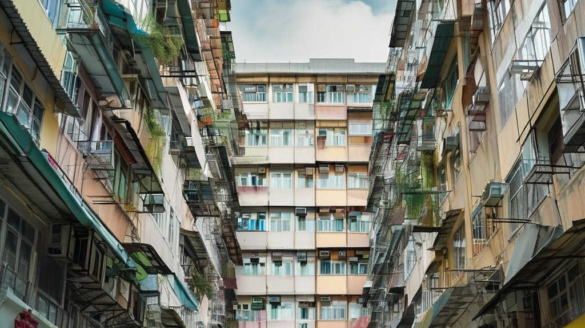
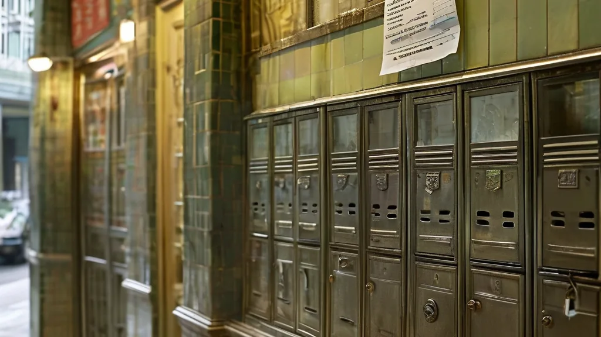
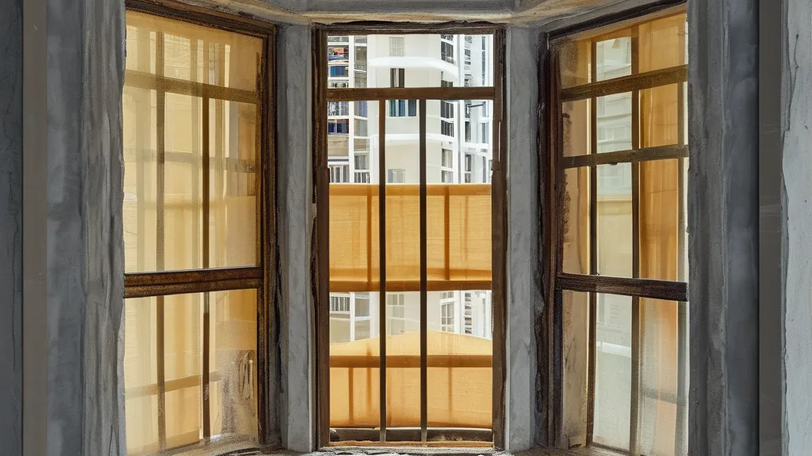
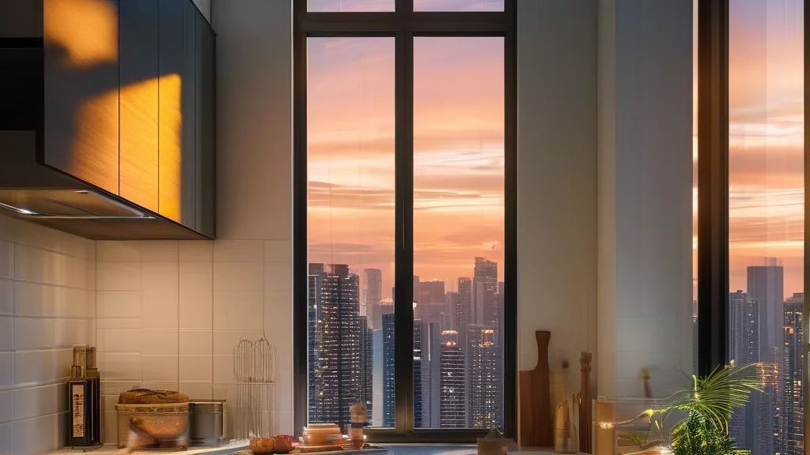

深水埗400呎大維修冇法團：雄哥講業委會簽唔到約嘅後果

📍 場景：深水埗一幢 1979 年落成舊樓，400 呎兩房單位｜主訪：雄哥（行內人叫法）｜同行：祥叔（觀塘木行三十幾年，做過十二年法團委員）｜記錄：雄哥｜整理：雲蕾｜日期：2026 年 11 月 26 日｜WhatsApp 報價：852 5190 2328
序幕：三組數字，比棚架更硬
11 月 25 日下午 2 時 05 分，立法會大會上有人問大廈管理，民政及青年事務局局長麥美娟逐項答。呢份答覆冇談判、冇樓價，淨係數字，但三個數字加起來，等於一幢樓嘅命。
第一個：2022 至 2025 年，民政總署共接獲 1,342 宗大廈管理投訴，主要涉法團管理、財務、維修、保養同保安。第二個：同期廉政公署接獲 1,940 宗有關樓宇管理及維修嘅懷疑貪污投訴，當中 1,060 宗涉法團及業委會運作。第三個：過去五年有 29 個資助出售房屋屋苑落成，只得 2 個成立或將會成立業委會。
答覆仲提到，民政總署 2027 年會推出「處理大廈管理糾紛三層機制」：第一層由區議員及早介入，第二層轉介專業調解，第三層先至考慮法律途徑。
雲蕾喺旁邊抄數字，抄到第三個就停筆，細聲問我：「29 個屋苑得 2 個有業委會，咁其餘嗰啲邊個話事？」我答唔到，因為我上個禮拜喺深水埗，就係俾同一個問題卡住。
第一幕：業主想搞個廚房，棚架卻停咗喺半空
深水埗一幢 1979 年舊樓，400 呎兩房，鄧生兩年前買入。佢想換走廚房一道發霉嘅木門框，順手換埋窗，因為對正後巷，油煙同車聲日日入屋。
我上到樓，唔使開門都知有問題：外牆棚架搭到六樓，五樓以上冇網，竹枝末端用膠帶綁住，天台邊仲有一卷未拆嘅圍網。呢啲係典型「搭到一半停低」嘅工地。
「雄哥，我唔理大維修，我淨係搞自己個廚房。換窗我自己俾錢，關法團咩事？」
「你個窗開喺外牆。外牆係公用部分，你一個人簽唔到棚架、簽唔到拆窗、簽唔到外牆收口。你幢樓連法團都冇，邊個同棚架公司簽約、邊個收錢、邊個負責拆棚？」
鄧生愣住，然後講出全句最好笑又最心酸嘅話：「我哋有業委會㗎，主任好熱心，佢話佢可以代簽。」
我同祥叔對望一眼。祥叔喺觀塘做木行三十幾年，做過十二年法團委員，佢聽完只講一句：「熱心唔等於有權。」

第二幕：業委會同法團，差一個「法人」兩個字
呢個分別，唔係文字遊戲，係簽名權。
業主立案法團係按《建築物管理條例》（第 344 章）成立嘅法人團體，法律上代表全體業主管理大廈公用部分，亦要承擔相應法律責任。業委會就唔同：佢係按大廈公契成立嘅組織，不具法人身分，屬諮詢性質，法律上唔可以代表業主管理公用部分，亦唔可以承擔法定責任。
11 月 25 日嗰份答覆寫得好清楚：業委會「僅屬諮詢性質，不能在法律上代表業主管理公用部分或承擔法定責任」。我讀到呢句，即刻想起鄧生個「主任代簽」。
「我做委員嗰十二年，最怕聽到『我哋冇法團，所以唔使開會』。冇法團，等於冇人孭飛。棚架合約、驗樓顧問約、承建商約，全部要一個法人去簽。你叫業委會主任簽，佢簽完之後，錢找邊個？出事告邊個？」
「咁係唔係一定要成立法團？」
「唔係一定要，但你要知道冇法團嘅代價：公用部分嘅工程，最後要靠全體業主各自同意，一戶唔肯，個工程就停。停喺棚架期，最貴。」
再講得白啲：1,060 宗涉法團及業委會嘅懷疑貪污投訴，講嘅唔係「有法團就會貪」，而係「有組織、有錢、有簽名權嘅位置，就有人想操控」。反過來，冇架構嘅大廈更易被逐戶「搞定」——一個單位一個單位去傾，傾到第三戶，個工程就變成「業主自己想做」，責任散到冇人認。
第三幕：換窗前三份文件，缺一張就唔好落單
鄧生最後問我：「咁我點知幢樓嘅大維修係真定假、邊個有權？」我教佢三份文件，份份都可以自己查，唔使靠人轉述。
第一份：業主大會決議紀錄。要睇日期、議程、表決結果同出席人數。冇紀錄嘅「大家傾過」，等於冇傾過。有法團嘅大廈，會議紀錄按《建管條例》要保存；冇法團嘅，至少要有一份由業主簽名確認嘅紀錄，影印本都要留。
第二份：簽約人嘅身分同授權。法團簽約，簽嘅人應該係主席或秘書，並附法團註冊證明；如果係授權代表，要有會議授權紀錄。呢一點好實用：我見過有「顧問」攞住一張手寫紙，話「法團叫我嚟收訂金」，業主就真係俾咗。
第三份：棚架期時間表。幾時搭、幾時拆、邊個星期可以換窗、外牆喉同冷氣機位幾時做。棚架一拆，你間屋嘅外牆工程就要等下一輪——下次再搭棚，多一次搭棚費、多一次申請、時間多三至四星期，室內工程就要跟住等。
技術上，換窗唔係「拆一塊裝一塊」：舊框拆走之後，窗台要用水泥砂漿收口，外牆邊要打兩度 PU 防水膠，玻璃用 6 毫米強化，窗鉸同鎖要跟原廠配件。呢啲工序全部要喺棚架未拆之前做，做完仲要等一場雨睇有冇滲水。所以時間表一亂，工序就斷。
價錢方面，一個 400 呎單位做室內配合（換窗、窗台收口、外牆喉位修補、全屋保護同完工修補），我哋做過嘅個案落喺 $35,000 至 $38,000。呢個係故事報價，實際以度尺為準。
「三份文件我邊度攢？業委會有，但係好似冇人留存。」
「唔緊要，攦唔齊就自己攢：第一次業主大會通知書、任何一封由屋宇署發出嘅信、上一次棚架合約封面，呢三樣都夠你去民政事務處同土地註冊處對照。唔係要你做法團秘書，起碼你要知道自己幢樓有邊個可以簽名。」
鄧生聽低就收咗個電話，「傾緊要即刻簽」，佢聽我講過呢三樣，就同對方講「等我問咗法團再覆你」。三分鐘後對方再 call 嚟，話「嗰份優惠今晚到期」。我同佢講：催你簽嘅，九成九係人為製造出來的緊急。

尾聲：最貴嘅唔係棚架，係「冇人簽名」嗰三個月
鄧生最後冇即刻開工。佢做咗三件事：去民政事務處問清楚幢樓有冇註冊法團；搵齊三年嘅業主大會紀錄；同隔籬三戶約埋一齊問棚架公司攞時間表。兩個星期後，棚架復工，佢個廚房排喺換窗期之後做，室內工程遲咗一個月，但冇多付一次搭棚費。
呢單嘢令我諗返 11 月 25 日嗰三組數字。1,342 宗投訴、1,940 宗懷疑貪污投訴，講嘅係同一件事：錢一多、人一多，程序就係唯一護欄。法團又好、業委會又好，最緊要係有人簽得、有人問得、有人留紀錄。
我同雲蕾離開深水埗嗰晚，樓下棚架嘅燈膽亮住。雄哥講句老實話：大維修最貴嘅，從來唔係棚架，係「冇人簽名」嗰三個月。

❓ 大廈管理與換窗三問
Q1：我幢樓只得業委會、冇法團，係唔係唔可以做外牆工程？
可以做，但唔可以由業委會以法人身分簽約。業委會屬諮詢性質、不具法人身分，法律上唔可以代表業主管理公用部分。實務上要由全體業主就該項工程達成共識、留下簽名紀錄，再由業主共同委任承建商；工程範圍、金額、付款方式都要寫清楚。最好先向民政事務處查詢幢樓嘅管理架構同可行做法。
Q2：換窗要唔要等大維修？
如果外牆正搭棚，換窗最好排喺棚架期內做，因為拆框、窗台收口、外牆打防水膠都要喺棚架上面施工。若果棚架已經拆，就要等下一次外牆工程或者另行申請，時間多三至四星期，費用亦會增加一次搭棚開支。落單前先問清楚棚架嘅搭拆時間表。
Q3：點分辨「真」嘅大維修通知同推銷？
法定通知由屋宇署發出，有通知編號同指定期限，唔會由顧問公司代發，亦唔會用「今日唔簽就趕唔切」嚟催。收到任何自稱通知嘅文件，先睇發出機構同編號，再向屋宇署或民政事務處核對，並要求對方提供書面授權同公司資料。凡要求即場現金訂金、唔肯留書面紀錄嘅，一律唔好簽。
本文配圖均為 AI 場景示意圖，僅供場景參考，並非真實工地照片或業主影像。
想知你個單位裝修要幾錢？
📱 一鍵 WhatsApp 張丹楓